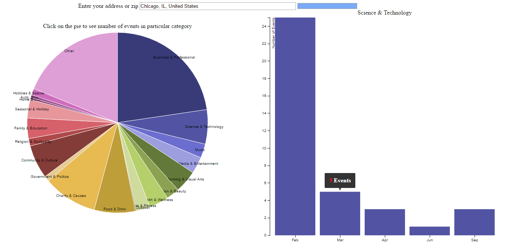

Events Around You
Simple application to know which events are most happening in your surroundings, a piechart shows the distribution of different categories of events and a bar chart shows how they are distributed over the months of a year.
How to Use
Using Events Around You is simple you start by entering your address or zip. You will be presented with a distributrion of events with in 3 miles from your location. Once you have a Pie Chart with categories click on any category on the pie chart and you can see the spread of events belongiong to a particular category over the months. You can also hover over the individual bar to see the actual number of events.

Data Used
The Eventbrite API gives you the necessary data when you register with Eventbrite as a developer.This application uses the data provided by the Eventbrite API.
Uses
- We can use this information to analyze what events are most happening around in the location
- The time of the month that particular category of events mostly happen
- Government authorities can estimate the crowd during particular month to provide services and maintain traffic.
- Advantage for Ubers and Lyfts to increase the availability of cars during particular months.